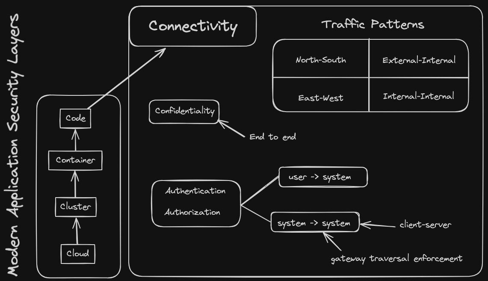
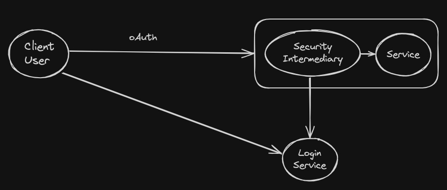
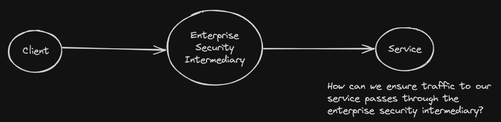
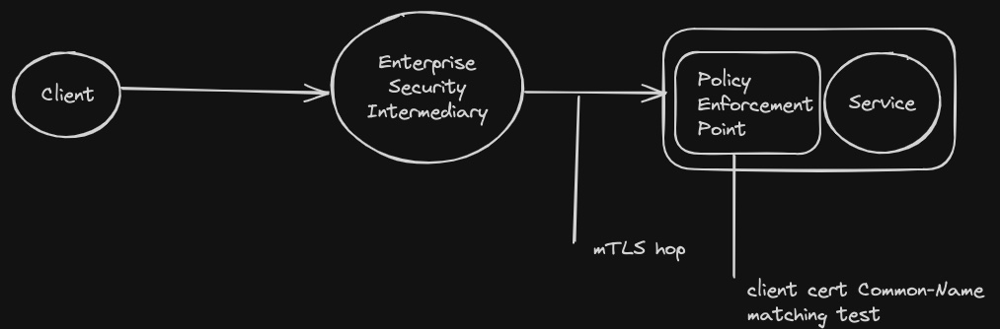
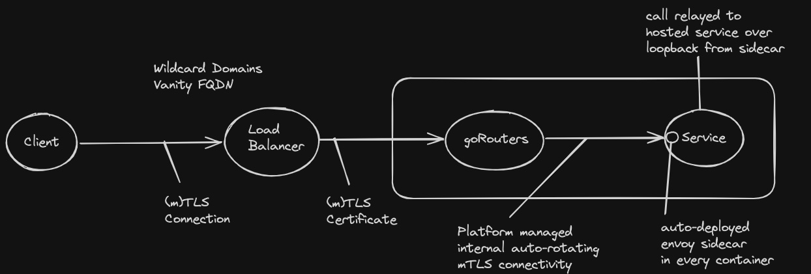

Tanzu Platform
Protecting your MicroServices
"Service-Connectivity" security concerns
Modern Application "Connectivity" Security Concerns
Slicing and dicing the 'connectivity' security challenge
north-south vs east-west traffic
system-sytem or user-system calls
enforcing intermediary traversal
Authentication & Authorization
Protecting our APIs from unauthorized requests
oAuth - Send user to enterprise login service first!
No need to manage user credentials
SpringCloudGateway handles login and authorization
Protecting system-system calls with api-keys

Federated AccessControl (api-key) Management Portal
Solving for "Last Mile" security
ATZ using SpringCloudGateway for mTLS client check
Confidentiality end-2-end in Tanzu Application Service
Platform delivers 'transparent-TLS to container'
Zero TLS requirements on platform tenant